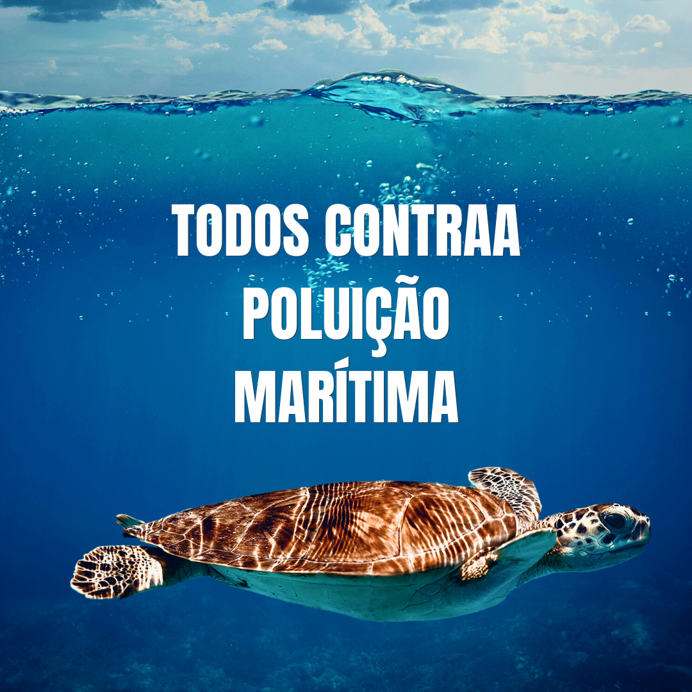

Projeto
Preservar é preciso!

A água é uma substância vital e fundamental para a vida na Terra.
A consciência ambiental nas águas é um conceito crucial que se refere à compreensão e sensibilização das pessoas sobre a importância de manter a saúde e o equilíbrio dos ecossistemas marinhos.
Os oceanos desempenham um papel fundamental na regulação do clima, na biodiversidade e na economia global, mas enfrentaram enormes ameaças devido à atividade humana e à mudança climática.
A consciência ambiental nas águas implica entender como nossas ações cotidianas podem ter um impacto significativo em nossos ecossistemas.
Poluição Marítima
A presença de plásticos nos oceanos é um problema ambiental grave e crescente que tem impactos negativos nos ecossistemas marinhos.
O plástico nos oceanos fornece diversas fontes, incluindo projetos mal geridos, vertederos, atividades de navegação e pesca, a degradação de produtos plásticos.
Muitos animais marinhos, como as tartarugas, confundem os objetos plásticos com alimentos e ssso pode levar à asfixia, bloqueios intestinais, desnutrição e, em última instância, a morte dessas criaturas.
Objetivo da "ODS" 14

O que é uma "ODS"?
Os 17 Objetivos de Desenvolvimento Sustentável (ODS) foram estabelecidos pela Organização das Nações Unidas (ONU) em 2015 e compõem uma agenda mundial para a construção e implementação de políticas públicas que visam guiar a humanidade até 2030.
A ODS número 14- "Vida na água" tem como objetivo “conservar e garantir o uso sustentável dos oceanos, dos mares e dos recursos marinhos“, assim dando a devida importância à preservação a esse ecossistema.
"Saiba Mais!"